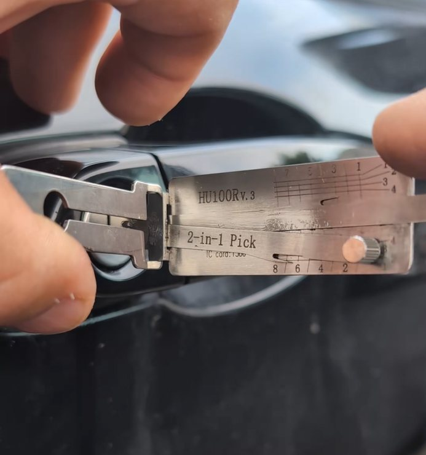

Locked Out of Your Car in OKC? Exactly What to Do (and What Not to Do)

Locked out right now? We're a local, licensed mobile locksmith and we come to you.
Call Now — (405) 870-5397It happens to careful people every day. You shut the door, and there they are — your keys, sitting right on the seat, on the other side of the glass. Maybe the car's still running. Maybe it's 102 degrees out. Maybe you've got somewhere to be and zero patience left.
First thing: take a breath. You're not the first person this happened to today, and you'll be back on the road sooner than you think. Here's exactly what to do, in order.
Before anything else: is anyone in danger?
If a child or a pet is locked inside — especially in Oklahoma heat — this is not a "wait for a locksmith" situation. Call 911 right now. Police and fire will get the door open fast, and an overheating car is an emergency, full stop. No lockout is worth risking that. Make the call first, then worry about the keys.
If it's just you and your keys on the wrong side of the glass, you've got time to do this the smart way.
Step 1: Check every door and the trunk
It sounds obvious, but do a full lap. Check all four doors, the hatch or trunk, and any door you don't normally use. People lock the driver's door out of habit and forget the passenger side or the rear is open. Ten seconds here can save you a phone call.
Step 2: Got roadside coverage? Call us first — you can still get reimbursed
A lot of people think a lockout means waiting on their insurance or roadside provider to dispatch someone. Here's what they don't realize: you don't have to wait. Those providers often send a third party who's slower to arrive and may be coming from across town.
Call us instead. We're local, we're fast, and we do this all day. Pay for the lockout, and we'll give you an itemized invoice you can submit to your roadside or insurance provider for reimbursement. Most lockout-coverage plans reimburse you whether you used their dispatcher or a licensed locksmith you called yourself — so you get back on the road faster and still get your money back. (Check your specific policy, but that's how most cover it.)
And if you've got a spare key 10 minutes away with someone who can bring it, that's always your free option — grab it.
Step 3: Call a licensed local locksmith
This is what we do all day, and on a typical car a proper car lockout takes minutes, not hours. The thing that matters most is who you call. Look for:
- A real, licensed locksmith (in Oklahoma, locksmiths are licensed by the Department of Labor — you can ask for the license number).
- A local number and a real business, not a random national call center.
- Someone who will tell you the price before they start, not after.
When you call us, you'll talk to an actual locksmith, we'll confirm what your vehicle needs, and you'll know the cost up front. No surprises, no "well, it turned out to be more."
What NOT to do (these mistakes cost real money)
This is the part people wish they'd read first.
Don't go at it with a coat hanger or a slim jim. Modern cars are not the cars those tricks were invented for. Inside your door panel are airbag wiring, sensors, lock actuators, and the window regulator — and a slip can set off a side airbag or tear up wiring. A $15 "trick" turns into a several-hundred-dollar repair in a heartbeat. A pro uses the right tool through the right access point and leaves no trace.
Don't pry the window or the door frame. Bending the frame to fish a tool in cracks weatherstripping, pops trim, and can crack glass. The damage almost always costs more than the lockout would have.
Don't call the first "$19 locksmith" ad you see. This is the classic bait-and-switch. The rock-bottom number gets them to your car, then the price climbs — "special equipment," "high-security vehicle," cash only. Reputable locksmiths don't work that way. If a quote sounds too cheap to be real, it is.
What it actually costs
Every vehicle is different — but you will never be surprised. We give you the price up front, before we ever dispatch a technician, and you'll know exactly what you're paying before we leave the shop. No guessing, no "it turned out to be more" once we're at your car. A standard car lockout is one of the most affordable jobs we do — it's the avoidable damage above that gets expensive.
We're not really opening a door — we're getting you back to your day
That's how we think about it. Whether you're late for work, stuck at the grocery store with melting groceries, or trying to get to your kid's game, the job isn't "pop a lock." It's getting you back to wherever you were headed, quickly and without a scratch on your car.
Turbo Keysmith covers the Oklahoma City metro — OKC, Edmond, Norman, Moore, Yukon, Warr Acres, and the surrounding area — and we come to you. Locked out, stuck, or stranded? See our 24-hour emergency service.
Locked out right now? Call (405) 870-5397.
Call Now — (405) 870-5397Frequently Asked Questions
How much does a car lockout cost in Oklahoma City?
It depends on the vehicle, but a standard lockout is one of our most affordable services — and you'll know the exact price up front, before we dispatch a technician, so there are no surprises.
Does my roadside assistance or insurance cover a lockout?
Often, yes. Many plans reimburse a lockout whether their dispatcher sent someone or you called a licensed locksmith yourself. The advantage of calling us directly is speed — we're local and usually faster than a dispatched third party. Pay us, take the itemized invoice we give you, and submit it to your provider. Check your specific policy for exact reimbursement terms.
How fast can you get to me?
We're a local OKC-metro mobile locksmith, so response times are typically quick. Call (405) 870-5397 and we'll give you a real ETA for your location.
Will you damage my car getting in?
No. A licensed locksmith uses the correct tools and access points for your specific vehicle — that's exactly why DIY coat-hanger attempts cause so much expensive damage and a pro doesn't.
Can you help if my car is push-to-start or keyless?
Yes. Keyless and push-to-start vehicles still have a way in, and we have the right tools and training for modern systems. Just let us know the year, make, and model when you call.